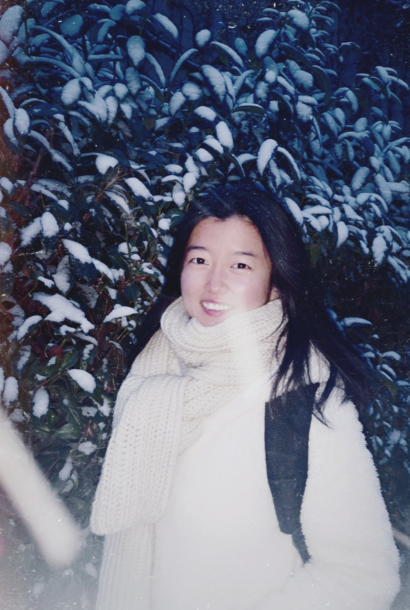

Jan 22nd, 2019
First snow in Aachen, Germany
Pengda Xiang


 I am a Ph.D. student working on Computer Vision and Graphics. I finished my bachelor degree @
IIIS, lead by Andrew Chi-Chih Yao in Tsinghua University
I am a Ph.D. student working on Computer Vision and Graphics. I finished my bachelor degree @
IIIS, lead by Andrew Chi-Chih Yao in Tsinghua University
 My research interest
currently lies in deep generative models.
My research interest
currently lies in deep generative models.
 pxiang[at]usc.edu
pxiang[at]usc.edu
- 2019.12 FDHelper has been conditionally accepted with shepherding for CHI'20!
- 2018.10 Just awarded the Tsinghua-RWTH Aachen Research Fellowship! See you Germany!
- 2018.09 Data-Driven Data Center Temperature Modeling and Prediction is accepted by ApSys 2018!
- 2018.05 Presented FraudVis and won the Best Poster Prize in The 8th Cross-Strait Tsinghua Postgraduate Academic Forum!
- 2018.04 FraudVis is accepted by PacificVis 2018!